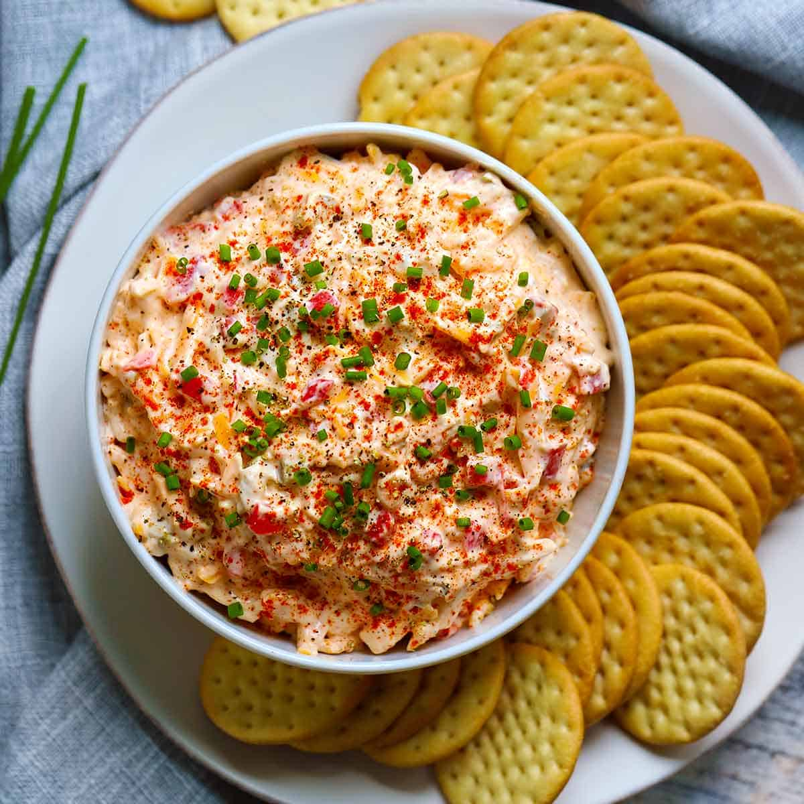

Southern Pimento Cheese

Description:
This wonderful pimento cheese with jalapeño can be used to spice up grilled cheese sandwiches, as a spread for crackers, or served alongside your favorite fried green tomatoes.
Ingredients:
- 2 cups shredded extra-sharp Cheddar cheese
- 8 ounces cream cheese, softened
- ½ cup mayonnaise
- (4 ounce) jar diced pimento, drained
- 1 jalapeño pepper, seeded and minced
- ¼ teaspoon garlic powder
- ¼ teaspoon ground cayenne pepper
- salt and black pepper to taste
Steps:
- Gather all ingredients.
- Place Cheddar cheese, cream cheese, mayonnaise, pimento, minced jalapeño, garlic powder, cayenne pepper, and onion powder in a large bowl.
- Mix until thoroughly combined.
- Season to taste with salt and black pepper.
- Enjoy!